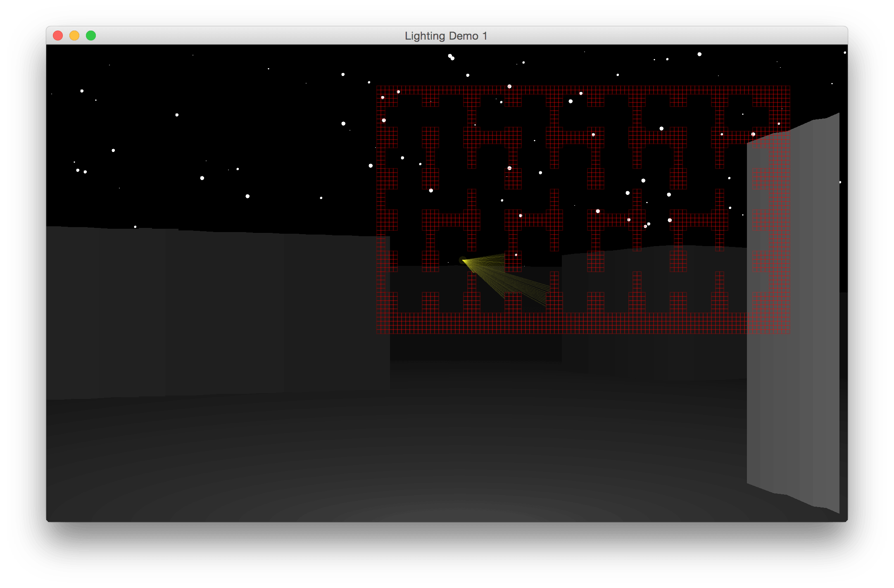
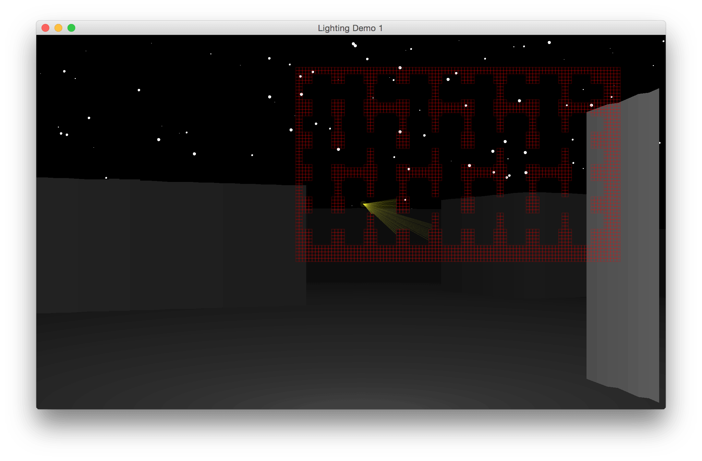
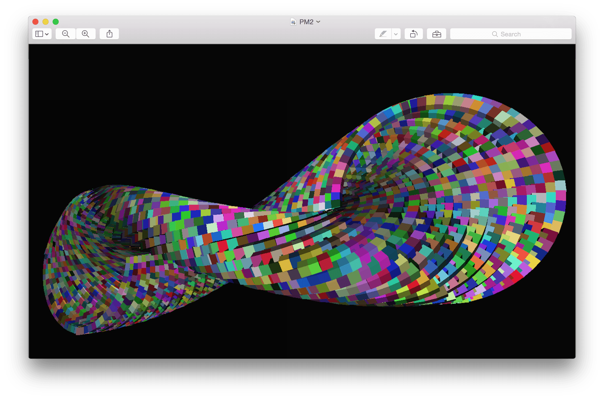
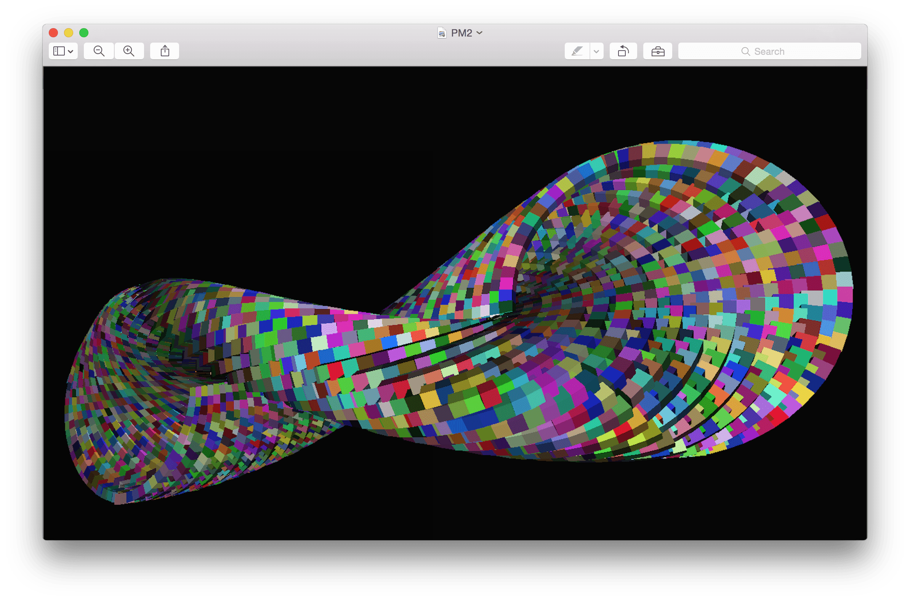

You aren't getting everything! Visit this site on a computer for the full experience.
victor javid dadfar

currently... watching: parks and recreation listening to: hans zimmer, zedd playing: kingdom hearts, just dance reading: r/mildlyinteresting, stackoverflow waiting for: episode vii
background
As an avid programmer, I enjoy spending my time working on personal and group projects. I have extensive experience with leadership and management positions, and I am an active member of my community, dedicating hundreds of hours of service to various organizations. My technological skills are versatile - I work in a multitude of languages including Python, Java, C, HTML/JavaScript, and use a variety of software from Matlab to Xcode.
present
education Johns Hopkins University, majoring in biomedical engineering and computer science volunteering bootup baltimore extracurriculars hackerlab (president/founder), iranian culture society, association for computing machinery, biomedical engineering society research barcode scanner (java) internships handwriting tablet app (iOS, andriod) design teams contraceptive implant training tool (center for bioengineering innovation and design), toco transducer (engineering world health)
past
education Morris Hills high school volunteering Saint Clare's hospital (1200 hours), junior auxiliary (president/founder) extracurriculars programming club (president/founder), academic decathlon (captain), alto saxophone, and others sports fencing (epee) honors societies social studies (president), math, science, national, french research predictive insight on the future of computer graphics (paper) internships QuarkNet summer intern (Rutgers)
future
to-do write more programs, graduate college, regularly update this site
projects
fluid simulation - java
executable jar
 jometry wars (geometry wars) - java
executable jar
jometry wars (geometry wars) - java
executable jar

 ray casting - java
executable jars
ray casting - java
executable jars
 
ray tracing - java

ray tracing - java

 projection matricies - java
executable jar
projection matricies - java
executable jar
 
minecraft clone - C

minecraft clone - C
 and more...
and more...
original games
disco rave - java
executable jar
jometry wars (geometry wars) - java
executable jar
a void - javascript
online game
outrace - javascript
online game
recreational sites
timeline
metro map
avengers
interactive poster
guardians of the galaxy
interactive poster
Hackerlab
official site
jhu.party
polling site